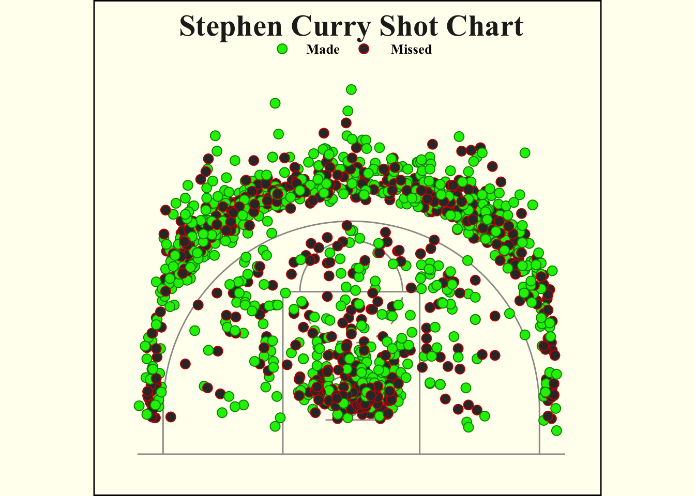
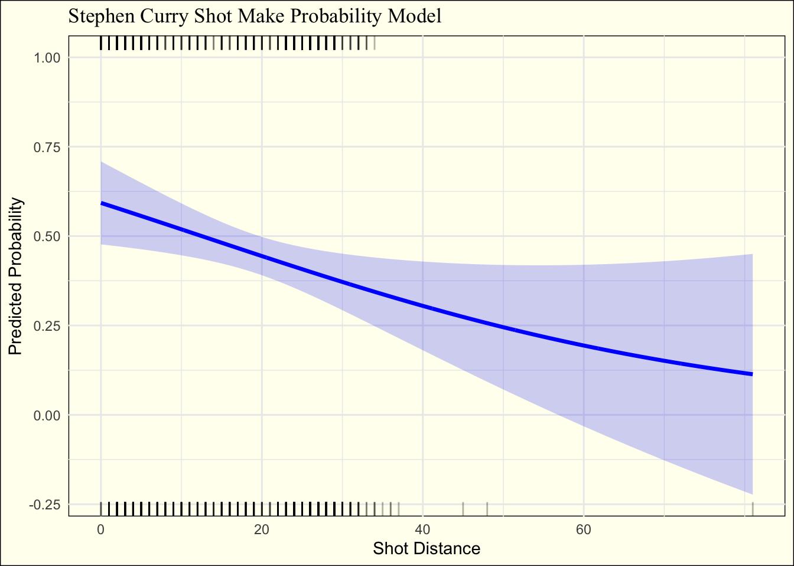

library(shiny)
library(nbastatR)
library(tidyverse)
library(ggplot2)
library(extrafont)
library(cowplot)
library(shinyWidgets)
library(broom)
library(modelr)
library(DT)
library(knitr)Written Report
Abstract
In this final project, I set out to create a shiny app that allows you to quickly look at an NBA player’s statistics for a given season, see a breakdown of their shooting, and a model that predicts the probability of them making a shot based on the distance they take it from. There is no data set for this project, but it is done using an API package called nbastatR. According to the documentation, this is described as, “An interface for professional basketball data in R. Data sources include, but are not limited to: NBA Stats API, Basketball Insiders, Basketball-Reference, HoopsHype, and RealGM. Overtime additional data sources will be added.”
When you use the API package it does create data frames. The one I used for this project is done using the teams_shots() function. Below is an example of what is in the data frame.
library(nbastatR)
teams <-
nba_teams() |>
filter(isNonNBATeam == 0) |>
filter(!is.na(colorsTeam))
teams <-
teams_shots(teams = "Golden State Warriors",
seasons = 2024)Golden State Warriors 2023-24 shot datateams <-
teams |>
filter(namePlayer == "Stephen Curry")
player <-
teams |>
mutate(isShotMade = as.numeric(isShotMade))
kable(head(player))| yearSeason | slugSeason | idTeam | idPlayer | typeGrid | namePlayer | nameTeam | typeEvent | typeAction | typeShot | dateGame | slugTeamHome | slugTeamAway | idGame | idEvent | numberPeriod | minutesRemaining | zoneBasic | nameZone | slugZone | zoneRange | locationX | locationY | secondsRemaining | distanceShot | isShotAttempted | isShotMade |
|---|---|---|---|---|---|---|---|---|---|---|---|---|---|---|---|---|---|---|---|---|---|---|---|---|---|---|
| 2024 | 2023-24 | 1610612744 | 201939 | Shot Chart Detail | Stephen Curry | Golden State Warriors | Missed Shot | Running Pull-Up Jump Shot | 3PT Field Goal | 20231103 | OKC | GSW | 22300005 | 40 | 1 | 8 | Above the Break 3 | Left Side Center | LC | 24+ ft. | -188 | 153 | 17 | 24 | TRUE | 0 |
| 2024 | 2023-24 | 1610612744 | 201939 | Shot Chart Detail | Stephen Curry | Golden State Warriors | Made Shot | Jump Shot | 3PT Field Goal | 20231103 | OKC | GSW | 22300005 | 53 | 1 | 7 | Above the Break 3 | Right Side Center | RC | 24+ ft. | 145 | 243 | 0 | 28 | TRUE | 1 |
| 2024 | 2023-24 | 1610612744 | 201939 | Shot Chart Detail | Stephen Curry | Golden State Warriors | Made Shot | Running Pull-Up Jump Shot | 3PT Field Goal | 20231103 | OKC | GSW | 22300005 | 249 | 2 | 6 | Above the Break 3 | Center | C | 24+ ft. | 50 | 272 | 15 | 27 | TRUE | 1 |
| 2024 | 2023-24 | 1610612744 | 201939 | Shot Chart Detail | Stephen Curry | Golden State Warriors | Missed Shot | Driving Layup Shot | 2PT Field Goal | 20231103 | OKC | GSW | 22300005 | 281 | 2 | 3 | In The Paint (Non-RA) | Center | C | Less Than 8 ft. | -45 | 0 | 23 | 4 | TRUE | 0 |
| 2024 | 2023-24 | 1610612744 | 201939 | Shot Chart Detail | Stephen Curry | Golden State Warriors | Made Shot | Step Back Jump shot | 3PT Field Goal | 20231103 | OKC | GSW | 22300005 | 292 | 2 | 2 | Right Corner 3 | Right Side | R | 24+ ft. | 230 | 83 | 29 | 24 | TRUE | 1 |
| 2024 | 2023-24 | 1610612744 | 201939 | Shot Chart Detail | Stephen Curry | Golden State Warriors | Missed Shot | Jump Shot | 3PT Field Goal | 20231103 | OKC | GSW | 22300005 | 305 | 2 | 1 | Above the Break 3 | Center | C | 24+ ft. | -43 | 253 | 43 | 25 | TRUE | 0 |
Introduction
Although there are many websites in which you can look at what my shiny app provides, I wanted to make this process easier. For instance, on Basketball Reference, which to my knowledge is the most common way to look at a player’s performance, it is hard to find what you are looking for, and to find earlier seasons. As well, there are certain metrics like shot percentage by distance which aren’t available. I decided to combine many of the statistics that are on Basketball Reference, with other valuable visualizations such as the shot chart and model showing shot make probability. Although there is no direct question to the creation of this app, there is reasoning. I wanted to create a quick and easy way for someone to look at a player’s performance, their strengths, and where they like to shoot from without having to scour the internet and go to multiple sources.
Relevant Visualizations
Shot Chart
circle_points = function(center = c(0, 0),
radius = 1,
npoints = 360) {
angles = seq(0, 2 * pi, length.out = npoints)
return(data_frame(
x = center[1] + radius * cos(angles),
y = center[2] + radius * sin(angles)
))
}
# Court Dimensions & lines
width = 50
height = 94 / 2
key_height = 19
inner_key_width = 12
outer_key_width = 16
backboard_width = 6
backboard_offset = 4
neck_length = 0.5
hoop_radius = 0.75
hoop_center_y = backboard_offset + neck_length + hoop_radius
three_point_radius = 23.75
three_point_side_radius = 22
three_point_side_height = 14
# Court themes
court_themes = list(
light = list(
court = 'ivory',
lines = '#999999',
text = '#222222',
made = '#00bfc4',
missed = '#f8766d',
hex_border_size = 1,
hex_border_color = "ivory"
),
dark = list(
court = '#000004',
lines = '#999999',
text = '#f0f0f0',
made = '#00bfc4',
missed = '#f8766d',
hex_border_size = 0,
hex_border_color = "#000000"
),
ppt = list(
court = 'gray20',
lines = 'white',
text = '#f0f0f0',
made = '#00bfc4',
missed = '#f8766d',
hex_border_size = 0,
hex_border_color = "gray20"
)
)
# Function to create court based on given dimensions
plot_court = function(court_theme = court_themes$light,
use_short_three = FALSE) {
if (use_short_three) {
three_point_radius = 22
three_point_side_height = 0
}
court_points = data_frame(
x = c(width / 2, width / 2,-width / 2,-width / 2, width / 2),
y = c(height, 0, 0, height, height),
desc = "perimeter"
)
court_points = bind_rows(court_points , data_frame(
x = c(
outer_key_width / 2,
outer_key_width / 2,
-outer_key_width / 2,
-outer_key_width / 2
),
y = c(0, key_height, key_height, 0),
desc = "outer_key"
))
court_points = bind_rows(court_points , data_frame(
x = c(-backboard_width / 2, backboard_width / 2),
y = c(backboard_offset, backboard_offset),
desc = "backboard"
))
court_points = bind_rows(court_points , data_frame(
x = c(0, 0),
y = c(backboard_offset, backboard_offset + neck_length),
desc = "neck"
))
foul_circle = circle_points(center = c(0, key_height), radius = inner_key_width / 2)
foul_circle_top = filter(foul_circle, y > key_height) %>%
mutate(desc = "foul_circle_top")
foul_circle_bottom = filter(foul_circle, y < key_height) %>%
mutate(
angle = atan((y - key_height) / x) * 180 / pi,
angle_group = floor((angle - 5.625) / 11.25),
desc = paste0("foul_circle_bottom_", angle_group)
) %>%
filter(angle_group %% 2 == 0) %>%
select(x, y, desc)
hoop = circle_points(center = c(0, hoop_center_y), radius = hoop_radius) %>%
mutate(desc = "hoop")
restricted = circle_points(center = c(0, hoop_center_y), radius = 4) %>%
filter(y >= hoop_center_y) %>%
mutate(desc = "restricted")
three_point_circle = circle_points(center = c(0, hoop_center_y), radius = three_point_radius) %>%
filter(y >= three_point_side_height, y >= hoop_center_y)
three_point_line = data_frame(
x = c(
three_point_side_radius,
three_point_side_radius,
three_point_circle$x,
-three_point_side_radius,
-three_point_side_radius
),
y = c(
0,
three_point_side_height,
three_point_circle$y,
three_point_side_height,
0
),
desc = "three_point_line"
)
court_points = bind_rows(
court_points,
foul_circle_top,
foul_circle_bottom,
hoop,
restricted,
three_point_line
)
court_points <- court_points
# Final plot creation
ggplot() +
geom_path(data = court_points,
aes(x = x, y = y, group = desc),
color = court_theme$lines) +
coord_fixed(ylim = c(0, 45), xlim = c(-25, 25)) +
theme_minimal(base_size = 22) +
theme(
text = element_text(color = court_theme$text),
plot.background = element_rect(fill = 'ivory', color = 'black'),
panel.background = element_rect(fill = court_theme$court, color = court_theme$court),
panel.grid = element_blank(),
panel.border = element_blank(),
axis.text = element_blank(),
axis.title = element_blank(),
axis.ticks = element_blank(),
legend.background = element_rect(fill = court_theme$court, color = court_theme$court),
legend.margin = margin(-1, 0, 0, 0, unit = "lines"),
legend.position = "bottom",
legend.key = element_blank(),
legend.text = element_text(size = rel(1.0))
)
}
teams <-
teams |>
mutate(x = as.numeric(as.character(locationX)) / 10,
y = as.numeric(as.character(locationY)) / 10 + hoop_center_y)p1 <-
plot_court(court_themes$light,
use_short_three = T) +
geom_point(
data = teams,
aes(
x = x,
y = y,
color = isShotMade,
fill = isShotMade
),
size = 3,
shape = 21,
stroke = .5
) +
scale_color_manual(
values = c("green4", "red3"),
aesthetics = "color",
labels = c("Made", "Missed")
) +
scale_fill_manual(
values = c("green2", "gray20"),
aesthetics = "fill",
labels = c("Made", "Missed")
) +
scale_x_continuous(limits = c(-27.5, 27.5)) +
scale_y_continuous(limits = c(0, 45)) +
theme(
plot.title = element_text(
hjust = .5,
size = 22,
family = "Times New Roman",
face = "bold",
vjust = -4
),
plot.subtitle = element_text(
hjust = .5,
size = 10,
family = "Times New Roman",
face = "bold",
vjust = -8
),
legend.position = c(.5, .98),
legend.direction = "horizontal",
legend.title = element_blank(),
legend.text = element_text(
hjust = .5,
size = 10,
family = "Times New Roman",
face = "bold",
colour = "black"
),
plot.caption = element_text(
hjust = .5,
size = 6,
family = "Times New Roman",
face = "bold",
colour = "lightgrey",
vjust = 8
)
) +
labs(title = "Stephen Curry Shot Chart")
ggdraw(p1) + theme(plot.background = element_rect(fill = "ivory", color = NA))
This visualization is important as it shows where a NBA player likes to shoot from and it is also quite easy to see their favorite locations to shoot from. This is a static version I created using Stephen Curry from the 2023-24 season. It was quite hard to get this to work and be updating which is why I implemented an update button. That way, you can select who you want to look at first, and the visualization isn’t constantly changing and being distracting.
Logistic Regression Model
mod <- glm(isShotMade ~ distanceShot,
data = player,
family = "binomial")
grid <-
data_grid(player,
distanceShot = seq_range(distanceShot, n = 1000))
aug <-
augment(mod,
newdata = grid,
se_fit = TRUE)
aug <-
aug |>
mutate(.predprob = (exp(.fitted) / (1 + exp(.fitted)))) |>
mutate(min = .predprob - .se.fit,
max = .predprob + .se.fit)made <-
player |>
filter(isShotMade == 1)
missed <-
player |>
filter(isShotMade == 0)ggplot(aug,
aes(x = distanceShot,
y = .predprob)) +
geom_line(linewidth = 1.2,
colour = "blue") +
geom_rug(data = made,
sides = "t",
alpha = 0.3,
aes(y = isShotMade)) +
geom_rug(data = missed,
sides = "b",
alpha = 0.3,
aes(y = isShotMade)) +
geom_ribbon(aes(ymin = min,
ymax = max),
fill = "blue",
alpha = 0.2) +
scale_x_continuous(breaks = seq(0, 70, 20)) +
theme_minimal() +
labs(x = "Shot Distance",
y = "Predicted Probability",
title = "Stephen Curry Shot Make Probability Model") +
theme(
panel.background = element_rect(fill = "ivory"),
plot.background = element_rect(fill = "ivory"),
plot.title = element_text(family = "Times New Roman")
)
My second visualization was of the predicted probabilities of a shot to go in for a given player, based on how far away they were shooting from. This is also a static version set to Stephen Curry from the 2023-24 season as well. This one also live updates to whichever player you select. This model shows that the chances of a shot going in decrease as a player is further away from the basket. What is most interesting is looking at how quickly the probability decreases. For someone like Stephen Curry, the probability stays higher for much longer than someone like Rudy Gobert. Although this is obvious if you know the playing styles of these two players, it is useful to compare between two more similar players. The only things I might improve on this visualization is making the model include more variables, but for simplification of interpretation, using only distance felt like it made the most sense.
Conclusion and Future Work
I don’t think that there are any true limitations to my visualizations, but some things I could add could be a heat map of where players shoot from. It would get rid of the one limitation of the shot chart which is that when there is a condensed area, it is hard to see a lot of the observations. Some thing else that I could add in the future to really improve this would be a second tab in which you could select a different player. This would allow for easy comparison and would be great for seeing who you would prefer, whether it is for your team, your fantasy team, or even sports betting. I don’t think this would be super difficult, the only reason I didn’t do it was because I think it would take a lot of power as this API is scraping data from the web and is already slightly slower than I want it to be.